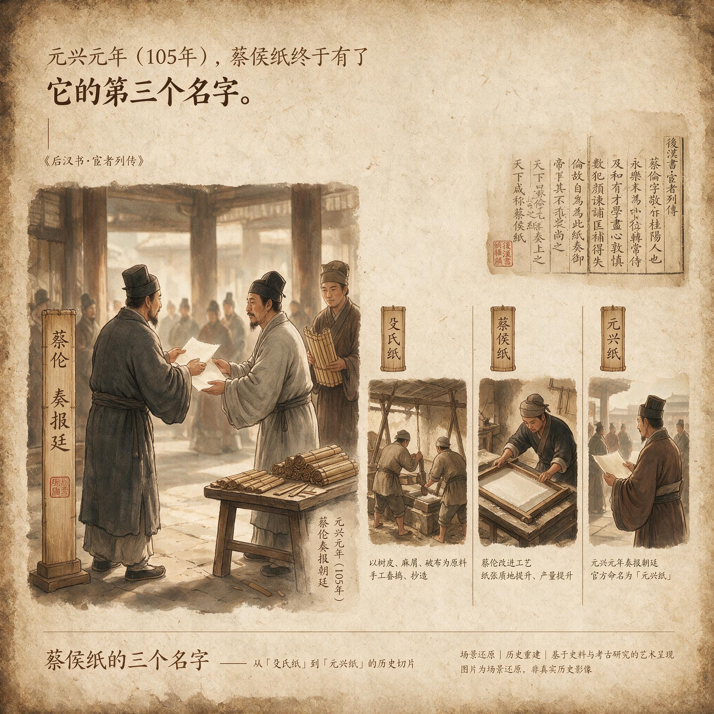

第 28 章
蔡侯纸的三个名字
元嘉九年，范晔在建康城外的官舍里编撰《后汉书》的宦者列传。他将最后一卷书简翻过，指腹触到纸页边缘已经发脆的裂口。残破的《东观汉记》宦者传摊在案上，纸色暗黄，有几处被虫蠹成细密的空洞，透出下面另一张纸的墨迹。手边堆着从各处收来的材料：几卷官方史籍残本、数种魏晋间私撰的杂史、还有他令书手抄回的各地耆旧传。
目光在“蔡伦”两个字上停住时，窗外的秋光正从竹帘缝隙漏进来，照得纸面上“伦”字的最后一笔微微发亮。

《后汉书·宦者列传》书影
AI 生成插图，非史实影像。
问题不在蔡伦做过什么。问题在于，如何把这些做过的事放进同一篇传文，而不让它们互相拆台。范晔此前已经处理过一批宦者传——郑众、孙程、曹腾，各有各的麻烦。但蔡伦的麻烦更特别：他的传文里必须同时放下一项利在万世的技术功绩和一桩不可回避的政治罪行，还要放下一部已经散佚的官方史籍如何取舍这道难题。
范晔重新读了一遍《东观汉记》残卷中蔡伦传的存留部分，读得很慢。那篇传文的行文框架，和他正在写的《后汉书》完全不同。
《东观汉记》的编纂者显然面临过与他此刻相同的困境：一个人，既是尚方令，又是罪臣；既“天下咸称便利”，又“有罪自杀”。官修史书写到这个人时，必须给皇帝留体面，给朝廷留体面，也给史笔留一点余地。范晔注意到，传文把蔡伦参与东观校书的经历写得极详，受命监校兰台与东观藏书、与刘珍李尤等人整理经籍、校定文字，占了存留篇幅的近半。这些内容安全，具体，可考，不触碰任何敏感处。
关于窦太后、关于汉安帝祖母宋贵人的旧案，传文完全不提，只在结尾落下极短的一句，说蔡伦有罪自杀。然后才是那句关于纸的话。
在尚方任上“作器械甚精”之后，紧跟着“又造纸，天下咸称便利”。“又”字用得极省。它让造纸听起来像是一道附带程序，一项日常职务的延伸，不必单独成章，不必解释来龙去脉，不必评价意义。
范晔把残卷放下，意识到这就是官方史籍处理敏感人物的方式：不是隐瞒，而是降格。承认蔡伦造过纸，但不让造纸这件事变得太大。
技术功绩被压缩成尚方令职务产出的一个项目，政治罪行被压缩成一句定性的尾巴。中间大段的校书经历，成了填充传文的既安全又体面的主体。这是第一种名字的出现方式：官方认可，却只肯给一个“又”字。
范晔铺开纸。他要做的不是复原《东观汉记》的策略。他得找到一种结构，让罪与功同时立得住，不互相涂抹，也不互相抵消。这个结构最终落在叙述顺序上。他斟酌再三，决定把造纸术放在前，政罪放在后。传文从籍贯入宫写起，写蔡伦的才学尽心，写他的匡弼得失，写他“每至休沐，辄闭门绝宾”的背影，然后进入尚方令任上的功绩。
在这里，范晔没有用《东观汉记》那个轻轻的“又”字。他写“伦乃造意”，把主语和动词之间那个人的决断重新放回纸面上。“造意”是经过选择的词。它承认蔡伦提出了构想，却不说他从虚空里发明了什么。但这已经足够。
范晔接着写原料：树肤、麻头、敝布、鱼网。写元兴元年奏上。写皇帝善其能。写“故天下咸称‘蔡侯纸’”。这一段节奏紧凑，几乎不给读者喘息。
原料清单、奏报时间、皇帝态度、社会接受，四个环节一线贯通。范晔在这里没有写任何技术上的曲折，没有写原料是否经过反复试错，没有写尚方工坊里的权力耳目或政治风险。他写的是一个已经被官方接受的结果，而不是一个曾处于危险中的过程。
然后他停了一拍。笔锋转下去：“及帝崩，邓太后临朝，伦奉职勤恪，益尽其心。”再往下，是那句关于受窦后讽旨诬陷宋贵人的定论，是安帝敕使自致廷尉，是“沐浴整衣冠，饮药而死”，是“国除”。从“伦初受窦后讽旨”到“国除”，只用了几十个字。快。干脆。不解释，不渲染，不替代古人辩白。
范晔把纸拿起来看。这篇传文的结构已经显出要义：先让读者看到技术如何利天下，再让读者看到这个人如何死。两者之间隔着一道时间的断层，也隔着一道评价的断层。功不掩罪，罪不掩功。这是分离式框架，不是简单的褒贬。他不是在替蔡伦翻案，也不是在替朝廷定性，他只是让两种事实各归其位，让读者自己去承受它们并存带来的不适。但这还不是全部。
在传文的最后，范晔加了十五个字：“及伦没后，所造纸流布天下，后世赖其利。”写完之后他搁下笔。
这一句让时间越过蔡伦的死，指向死后的历史。政治权力夺走了他的封国和性命，却没有夺走他造纸这件事在更长时段里持续发生的作用。纸与人分开了。
范晔不会知道，一千多年后一个美国人会把蔡伦排进影响人类历史进程的百人名次，排到第七位。那个名次的逻辑，和这十五个字几乎是同一条思路：把技术功绩从政治定性中剥离，再放到足够长的时段里称量。可范晔也不会知道，恰恰是这种分离，为后世第三种名字的出现让出了道路。他把罪的事情写清楚了，后人却可以只取功的那一半来用。纸上的蔡伦已经被分开过一次，后来的人再分一次，就分得更加彻底。
耒阳和洋县的故事，是在范晔之后很久才被记进方志与碑文的。唐代的地方官在旧志里找到一条关于蔡伦故宅和沤麻池的记载，就在遗址上立祠奉祀。那条记载的来源已经说不清了。
它可能早就存在于地方耆旧的口头传说里，也可能是某个文人途经时留下的笔记，被后来的编者转抄。无论源头如何，这条记载一旦进入方志，就获得了某种近似于“史”的体例身份。此后每一次重修祠堂，立新碑，碑文都会在前代文字的基础上再写一遍。
到了宋代，耒阳蔡侯祠的碑记已经形成了固定的叙事：蔡伦生于此地，少时家贫，入宫为宦，在尚方任上发明造纸术，封龙亭侯，利在天下。这个叙事不碰洛阳，不碰窦太后，不碰宋贵人，不碰廷尉府，更不碰那杯毒药。
洋县的祭祀传统则更偏向行业神崇拜。当地纸匠在每年三月十六日设祭，奉蔡伦为纸业祖师，祈求造浆顺利、纸幅匀洁。人们供的不是宦官蔡伦，不是尚方令蔡伦，甚至不是龙亭侯蔡伦，而是造纸的蔡伦。
范晔的分离式框架在这里被推得更远。范晔还承认有罪，地方志与民间传说则把罪的痕迹渐渐抹去。南宋一方碑记写：“至其得罪之由，史有阙文，不敢妄议。”这话很有意味。
书写者不是不知道蔡伦的死法，也不是没见过《后汉书》的传文，但他选择以“阙文”作为挡板，绕开那一段。地方社会需要的是一个可以祭祀的乡贤和祖师，不是一个带着政治污点的宦官。于是每一次重述，都是一次筛选。筛掉的是宫廷，是政治，是罪与死；留下的是故宅、池塘、树皮、破布、纸坊和万世之利。
到了明代，耒阳祠中的塑像已经“貌甚古雅，衣冠如士大夫”。画谱里的蔡伦造纸图也随这套形象走：一位宽袍老者站在池边，手中持着抄纸帘，身旁有儿童捧浆相侍。人物眉目慈和，全无宦官的痕迹。纸业祖师需要一个像贤者、像士人、像行业之父的面孔，不能像一个内廷近侍。
于是形象变了。在地方画工和塑匠的手里，蔡伦的衣冠、面容、神情，都按照民间对“圣人”的想象重新生成。
这三种名字——官修史籍里的“又造纸”，正史传文里的“蔡侯纸”，方志祠祀里的“纸圣”或“纸业祖师”——不是先后接替的阶段，而是三种逻辑在长时段里同时叠加。
《东观汉记》的写法影响了范晔的取材，范晔的传文又成为后世一切叙事的基础文本，而地方记忆则在范晔的框架上继续删削和添加。它们互相引用，互相修正，也互相遮蔽。蔡伦的形象不是从甲变成乙再变成丙的直线进化，而是三层书写叠在同一页纸上，透过一张纸可以看见另一张纸的墨迹。
郑樵在《通志》里说：“伦之罪不可掩，而其功亦不可没也。”这话看起来很公道，但后面还有一层转折。郑樵接着说，后世造纸越精，蔡伦之名越显，“是功大于过也”。功大于过，这个判断的依据不在蔡伦本人，而在技术的后果。日子越久，纸张对文明发生的作用越大，罪过的分量就被冲得越轻。
这是一种用长时间段的后果反推个人评价的方式。它并不追问蔡伦当初为什么能造纸，只承认纸造出来了，而且一直有用。这个判断一直延续到二十世纪的那个排行榜。
它把蔡伦排在第七位，排在许多推翻了帝国、发现了新大陆、写出了定律的人之前。那个排名的标准很明确：看一个人改变人类历史进程的幅度，不看道德，不看政治，只看后果。
按照这个标准，纸当然够重。它让信息的复制成本骤降，让知识得以大范围流动，让行政、学术、宗教和文学都建立了新的运行节奏。蔡伦的名字因此进入全球性的文明史叙事，不再是某个王朝的臣子，而是人类技术史上的一个节点。
但恰恰是在这个最高处，反方的问题变得不可回避：造纸术真的是蔡伦一个人的发明吗？还是他在东汉书写材料普遍紧张的背景下，把此前已经存在的多种技术尝试整合起来，利用尚方令的制度位置完成了关键一步？这个反问不是要抹去蔡伦的贡献，而是要指出，所有的历史书写——从《东观汉记》到二十世纪的排行榜——始终在做同一件事：把一项复杂的、累积性的技术过程压缩到一个名字上。
范晔其实已经这样做了。“伦乃造意”四个字，就是把漫长的试验和整合过程收束成一个人的构想。此后的方志、碑记和民间传说，再把这个人塑成在池塘边独自发现纤维秘密的天才。
每一次压缩都让故事更清晰，便于记忆，便于祭祀，便于纳入排行榜。代价则是：发明被抽离了它的制度环境。
范晔把那卷残破的《东观汉记》宦者传又翻了一遍。这一遍他不再看内容，而是看空缺。虫蠹的洞、水渍漫过的字、被前代读者翻烂的纸边，都在告诉他同一件事：这部官修史书在蔡伦传上留下的痕迹，本身就是一种书写。
空缺处曾经有字。那些字是什么，已经没人能确认了。但空缺的位置、空缺前后的文脉、空缺在整篇传文中所占的比例，都可以读。范晔用指尖沿着虫洞的边缘划过去，像在摸一道旧伤疤的轮廓。
他意识到，《东观汉记》的编纂者不是简单地删掉了蔡伦的政治罪行。他们做了一件更精细的事：把罪行压缩到必须出现的最小篇幅，再用大量安全的内容把那个篇幅包裹起来，让它变成整篇传文中最不显眼的部分。校书经历占了存留篇幅的近半，尚方任上的器械制作占了一段，造纸只用一个“又”字带过，然后传文就结束了——如果不算结尾那句关于自杀的简短交代的话。这种结构不是记录，是埋葬。把一个人最危险的部分埋在大量无害的叙述下面，让后来的读者翻到这里时，目光已经疲倦，判断已经松懈，不会在那个短短的句子上停留太久。
范晔把残卷合上，放在案角。窗外有风从竹帘缝隙灌进来，吹得纸页边缘轻轻掀动。他在想另一个问题：《东观汉记》的编纂者为什么要费这么大的力气去处理蔡伦？
东汉宦者中有政治污点的不止蔡伦一个。有些人被直接删掉，根本不立传；有些人立了传，但只写官职迁转，不写具体事迹，像一份干枯的履历表。蔡伦的传文却不一样。它保留了相当丰富的细节：入宫时间、才学表现、匡弼得失、监校经籍的过程、与刘珍李尤等人的合作关系、尚方任上的器械改良，甚至还有“每至休沐辄闭门绝宾”这种极具画面感的私人习惯。
这些细节的存在说明，编纂者不想把蔡伦从历史中抹掉。他们想保留这个人，但必须用一种安全的方式保留。于是他们把蔡伦切成两块：一块是可供记录的技术官僚和校书学者，一块是不可言说的政治罪人。前一块被充分展开，后一块被压缩到极限。两块之间的裂缝，就是“又造纸”那个“又”字的位置。
范晔铺开一张新纸，提笔在纸的上方写下“蔡伦传”三个字。他没有马上动笔写正文，而是在这三个字下面画了两条竖线，把纸面分成三栏。左栏标注“东观汉记”，中栏标注“后汉书”，右栏空着，暂时没有标注。
他在左栏里快速写下几个关键词：校书、尚方、器械、又造纸、自杀。然后在这些词之间画连线。校书到尚方之间是一条实线，表示职务迁转的连续性。尚方到器械之间也是一条实线。但从器械到造纸之间，他画了一条虚线。
虚线的意思是不确定——不确定造纸是否真的是器械制作的延伸，还是编纂者为了降格造纸的意义而故意建立的联系。从造纸到自杀之间，他画了一条更长的虚线，中间隔着一大段空白。那段空白在《东观汉记》的传文里不存在，因为传文根本不写蔡伦为什么自杀。空白是范晔自己加上去的。它代表编纂者省略掉的全部政治语境：窦太后的讽旨、宋贵人的冤案、汉安帝的追责、蔡伦在廷尉面前的最后选择。
范晔盯着那段空白看了很久。空白不是无。空白是一种有意的沉默，而沉默本身就是一种叙事策略。
官修史书用沉默告诉后来的读者：这件事我们知道，但我们不写；我们不写不是因为不重要，而是因为太重要，重要到不能写在纸上。这种沉默比任何文字都更清楚地标出了权力的边界。
史笔可以记录一个人的职务、功绩、才学和习惯，但不能记录权力核心的谋杀。那个区域属于口头记忆，属于私下的谈论，属于野史和杂记，唯独不属于东观兰台的正式史册。
范晔把笔移到中栏。他要做的不是填补空白——空白一旦被填补，就不再是空白，而是另一种叙事。他要做的是让空白本身变得可见。
让后来的读者在读到他写的蔡伦传时，能够感觉到那里有一段被省略的东西，就像摸到纸上虫蠹的洞。
他开始在中栏里写下自己的结构设计。第一步：先写造纸。不是用“又”字轻轻带过，而是用“伦乃造意”开头，把原料、时间、皇帝反应、社会接受全部写清楚，让造纸成为传文前半段的高潮。
第二步：写政治罪行。不是用一句定性的话结束，而是把前因后果交代明白——窦太后怎么讽旨、蔡伦怎么执行、宋贵人怎么死、安帝怎么追责、蔡伦怎么自杀。让政治罪行成为传文后半段的核心事件，和前半段的造纸形成对称。
第三步：在两者之间插入邓太后临朝期间蔡伦“奉职勤恪”的过渡段。这个过渡段的作用不是缓和矛盾，而是制造时间的断层——让读者看到，造纸发生在安帝即位之前，政治追责发生在安帝亲政之后，中间隔着一个邓太后称制的时期。这个时间差不是范晔编造的，是历史本身就有的。
他只是把它写出来，让读者自己去想：一个人在造出利在万世的纸之后，又度过了几年勤勤恳恳的岁月，然后才被旧案追上。这几年里，他知道自己的命运吗？他每次闭门绝宾的时候，在想什么？
范晔不会替蔡伦回答这些问题。他只需要把时间差写清楚，问题会自动浮现。
范晔在中栏的最下方又加了一行字：“及伦没后，所造纸流布天下，后世赖其利。”这十五个字是他给整篇传文加的尾巴。它不是叙事的一部分，而是叙事结束后的延伸。它告诉读者：传文到这里写完了，但纸的故事没有完。纸越过蔡伦的死，继续向前流布，一直流到读者手中的这一张。这个尾巴让整篇传文的结构从“生—功—罪—死”变成了“生—功—罪—死—纸继续存在”。死亡不再是终点。纸代替人活了下来。范晔搁下笔，把纸拿起来看。三栏之中，右栏仍然空着。他还没有想好右栏应该标注什么。也许应该标注“后世”，也许应该标注“民间”，也许应该标注一个他还不知道的名字。他把纸放下，决定先把这个问题留给时间。
他不知道的是，在他死后不到两百年，北魏的郦道元会在《水经注》里记下一行字：“耒水西北径蔡伦故宅，旁有沤麻池。”
这行字没有出现在任何正史的宦者传里，它出现在一部地理书中，夹在对耒水流域山川城池的描述之间。郦道元可能只是路过，可能只是抄录了前代地记的材料，可能根本没有意识到这行字日后会成为第三种名字的起点。
但它的位置本身就说明了一件事：在范晔的分离式框架之外，还有一种更古老的记忆方式在民间运行。那是地方记忆。它不关心朝廷的定性，不关心史家的评价框架，甚至不关心蔡伦是否罪有应得。它只关心一件事：这个人在这里生活过，在这里造过纸，在这里留下了可以被指认的痕迹——故宅、池塘、沤麻的池子。
这些痕迹是具体的、可触摸的、可以被人站在旁边指给人看的。它们不需要史书的权威来证明自己的真实性。它们的存在本身就是证明。
到了唐代，地方官在耒阳找到了这些痕迹。也许故宅已经坍塌，也许沤麻池已经淤塞，但地名还在，传说还在，老人们的口头叙述还在。地方官决定在这里立一座祠。立祠的理由写在碑记里：蔡伦造纸，利在天下，乡人感其德，立祠祀之。碑记不提《东观汉记》，不提《后汉书》，不提任何正史中的宦者传。它只提纸。纸是蔡伦和这个地方之间最直接的纽带。纸让一个宦官的故宅变成了可以祭祀的圣地。纸让一个政治罪人的名字变成了可以刻在碑上的乡贤之名。纸做到了一件正史做不到的事：把蔡伦从洛阳的宫廷政治中彻底抽离出来，重新放回耒阳的土地上。
范晔不会知道这些。他合上《东观汉记》残卷，开始誊写已经拟好的传文稿。笔锋落在纸面上，墨迹渗进纤维，每一个字都带着他作为史家的判断和取舍。
他写得很慢，偶尔停下来翻检其他材料——刘珍的《东观汉记序》、司马彪《续汉书》中关于尚方令职掌的记载、魏晋间某部杂史中关于邓太后称制时期宦官活动的零星记录。这些材料有的可信，有的可疑，有的明显带着传闻的色彩。范晔逐一甄别，把可信的留下，把可疑的删掉，把传闻中那些虽然无法证实但足以说明某种处境的部分改写成谨慎的叙述。
他在处理蔡伦受窦后讽旨这一段时尤其小心。这段话在《东观汉记》里完全不存在，在魏晋杂史中则有多种版本，细节互有出入。有的版本说蔡伦是主动迎合窦后，有的版本说他只是奉命行事，有的版本说他事后曾私下表示悔意。
范晔无法判断哪个版本更接近真相。他最终选择了一种最克制的写法：只写蔡伦受讽旨、执行、宋贵人死，不写动机，不写心理，不写事后反应。他让事实自己说话。
事实是：蔡伦执行了窦后的命令，宋贵人死了，安帝亲政后追责，蔡伦自杀。这四个环节之间不需要任何心理描写来连接。它们之间的因果关系已经足够清晰。
但范晔也知道，这种克制本身就是一种态度。他选择不写蔡伦的动机，不是因为动机不重要，而是因为动机无法确知。他不愿意像官修史书那样用沉默来回避问题，也不愿意像野史那样用猜测来填补空白。他选择站在两者之间：承认有罪，但不推测罪的深度；记录死亡，但不渲染死的惨烈。这种态度让他的传文带上了一种特殊的质感。它比《东观汉记》更完整，比野史更严谨，比后世的碑记更冷峻。它不替任何人说话，也不替任何人定罪。它只是把材料放在纸面上，让材料自己形成结构，让结构自己产生判断。
誊写完成后，范晔把传文从头到尾读了一遍。从“蔡伦字敬仲，桂阳人也”到“国除”，再到“后世赖其利”，全文不过数百字。数百字里装下了一个人的一生，装下了造纸术的关键一步，装下了一桩宫廷谋杀案的前因后果，装下了权力如何追责、技术如何流传、纸如何越过死亡继续存在。
范晔把纸卷起来，放在已经写好的其他宦者传旁边。郑众、孙程、曹腾、单超、侯览、吕强、张让——这些人的传文各有各的写法，各有各的麻烦，各有各的需要处理的政治敏感处。
蔡伦的传文在其中不算最长，也不算最详细，但它的结构是最特别的。只有这篇传文把技术功绩和政治罪行放在同一个平面上，让它们各自独立，又互相映照。只有这篇传文在死亡之后加了一个尾巴，让纸的故事继续向前走。范晔不会知道这个尾巴日后会长出什么。他只是觉得，这样写是对的。
窗外秋光渐暗。范晔把案上的材料收拾整齐，《东观汉记》残卷放在最上面。那卷残纸的边缘又掉了一小块碎片，落在案面上，像一片枯叶。
范晔把碎片捡起来，夹进自己正在编的书稿里。他不知道这片碎片会在书稿里夹多久，也不知道日后会有谁翻开书稿时发现它。他只是觉得，碎片不应该被丢掉。它是《东观汉记》的一部分，是第一种名字的一部分，是那个轻轻落下的“又”字曾经存在的证据。
纸会碎，字会残，但碎片本身也是历史。它告诉后来的读者：这里曾经有过一部官修史书，那部史书用沉默和降格处理了一个人，而那个处理方式本身，已经成为理解这个人的第一层书写。
范晔吹灭灯，书斋陷入黑暗。纸上的墨迹在暗中继续渗入纤维，像水渗入土壤，像时间渗入记忆。
尚方令的位置怎样汇集了人力、原料和宫廷订单，铁官家庭怎样提供了对纤维和捶打的感官经验，宦官身份怎样迫使蔡伦把技术改良变成自证价值的手段——这些都被名单和祭祀遮蔽了。
后世研究者凌纯声曾提出，蔡伦改良造纸技法的创新源流，可能受有南岛语族树皮布文化的影响，他将古代造丝纸与造树皮布纸的两种工艺整合起来，从动物性材料改为转用植物纤维（渔网、木料）来造纸，遂得到便宜、好用的“真纸”。这一整合过程，正是三重结构性条件在具体工艺层面的体现。
王昶在清嘉庆年间到过耒阳蔡侯祠。那一天他看完宋元碑刻后，在日记里写了一句：“读其文，但言纸利天下，不言其得罪自杀事。盖乡人重其功而讳其过也。”写完，他合上本子。
那本子是用竹纸做的。窗外耒水的反光落在纸面上，也落在正殿里的蔡伦塑像上。塑像安静地坐着，手持纸卷，供案上摆着香烛和几刀新纸。
王昶没有继续追问：为什么“乡人重其功而讳其过”？他到那里是去记碑文，不是去解决历史评价的问题。但答案其实就在他手边那刀新纸里。那刀纸从浆池到抄帘到压榨到烘壁，经过的手续和东汉尚方工坊里的工艺已经不同。它被叫作“纸”，而这名字本身就是一层一层历史书写留下的遗产。
蔡伦的名字附着在纸上，像纸上一行墨迹；名字被书写过多次以后，名字本身变成了另一种纸。塑像沉默。它手中的纸卷也沉默。纸不会说话。
它只承载。承载《东观汉记》那个轻轻落下的“又”字，承载范晔把“造意”放在罪前又放在死后的结构，承载方志碑文里被反复誊写的故宅与沤麻池，承载王昶日记里那一声不动声色的“讳其过”。这些书写叠在一起，如纸页叠成书册。书的封面叫作“蔡侯纸”，内页却写满了后世如何先后塑造同一个人的全部痕迹。王昶离开祠堂时，暮色已经落到耒水河面。他怀中的本子里夹着一张纸，上面抄着祠中最古碑文的片段。那张纸被袖口压出几道折痕，折痕处纤维翘起，像极细的骨节在光线下微微发白。